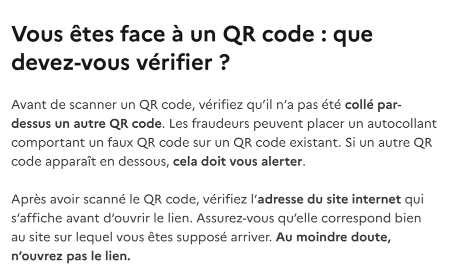

Ces petits carrés cachent du texte, souvent un lien. Comment ton téléphone les lit, même abîmés, et comment repérer un faux QR code avant de te faire piéger.
Appareil photo du téléphoneRien à installer1 captures annotées
1
C'est quoi ?
Un QR code (« Quick Response », réponse rapide) est un code-barres en deux dimensions : du texte (une adresse web, un mot de passe Wi-Fi, un numéro…) écrit sous forme de petits carrés noirs et blancs, que l'appareil photo de ton téléphone sait lire en une fraction de seconde.
Du texte en carrés
Chaque petit carré (un module) vaut un bit : noir = 1, blanc = 0. Un QR code va de 21 × 21 à 177 × 177 modules (40 tailles) et peut contenir plus de 7 000 chiffres, contre 13 pour un code-barres de supermarché.
Le principe
Les trois carrés repères
Les trois gros carrés des coins ne contiennent aucune donnée : ce sont des repères. Ils disent au téléphone où est le code, quelle taille il fait et dans quel sens il est tourné. Le coin sans repère indique le bas à droite.
Pour le trouver
Une copie de secours
Une partie des carrés sert de correction d'erreurs (codes de Reed-Solomon). Selon le réglage choisi à la création, le code se répare s'il perd environ 7, 15, 25 ou 30 % de ses données. C'est ce qui permet d'ajouter un logo au milieu.
Selon le réglage
Libre depuis 1994
Inventé en 1994 par Masahiro Hara chez Denso (groupe Toyota) pour suivre des pièces automobiles. L'idée des trois carrés repères lui est venue dans un train, en voyant un immeuble se détacher du paysage : son équipe a ensuite cherché pendant environ trois mois le motif le plus rare dans les textes imprimés (ratio 1:1:3:1:1). Autre inspiration : le jeu de go, pour que les parties intactes compensent les parties abîmées. Denso a gardé son brevet mais a décidé de ne pas le faire valoir : tout le monde peut créer des QR codes gratuitement. Seul le nom « QR Code » est une marque déposée.
Gratuit pour tous
Ce qu'il faut savoir
⚠Le faux QR code (quishing). Contraction de « QR code » et de « phishing » : un QR code piégé t'envoie vers un faux site pour voler tes données ou ton argent. En 2025, de faux QR codes ont été collés sur des horodateurs à Nice (mars) et à Marseille (14 avril, quartier Vauban).
!Un autocollant par-dessus ? Bercy conseille de vérifier qu'un QR code n'a pas été collé par-dessus un autre : si un second code apparaît en dessous, méfiance. Sur un horodateur, passe plutôt par l'appli officielle de la ville ou du parking.
✓Lis l'adresse avant d'ouvrir. Après le scan, ton téléphone affiche l'adresse du site avant de l'ouvrir. Vérifie qu'elle correspond au site attendu ; au moindre doute, n'ouvre pas le lien et ne tape aucune coordonnée bancaire.
%« 30 % », avec une nuance. Le chiffre donné par l'inventeur vaut pour le niveau de correction le plus fort (H). Beaucoup de QR codes utilisent un niveau plus faible (7 ou 15 %), et une tache sur un des trois carrés repères peut suffire à bloquer la lecture.
⌂Piégé ? Agis vite. Si tu as payé, préviens tout de suite ta banque. Bercy oriente vers 17Cyber (diagnostic et démarches adaptées) et, en cas d'escroquerie, vers la plainte en ligne, possible dès qu'une somme t'a été demandée.
2
Comment ça marche
Ce qui se passe en une fraction de seconde entre le moment où tu vises un QR code et celui où le lien s'affiche.
1
Repérer les trois coins
Image › 3 carrés repères › Position
L'appli cherche dans l'image le motif des trois gros carrés (anneaux noir, blanc, noir). Ils donnent la position, la taille et l'orientation du code, même penché ou vu de biais.
2
Redresser et lire la grille
Remettre droit › Grille › 0 et 1
Le code est remis d'aplomb, puis chaque module est lu : noir = 1, blanc = 0. De petites zones près des repères indiquent d'abord le niveau de correction et le masque utilisé.
3
Corriger les erreurs
Données › Secours › Réparé
Une partie des modules sert de copie de secours (Reed-Solomon). Si une tache, un pli ou un logo en cache un bout, le téléphone recalcule ce qui manque, dans la limite du niveau choisi.
4
Afficher le contenu
Texte › Lien › Vérifier
Le texte décodé s'affiche : souvent une adresse web, parfois un réseau Wi-Fi, un contact ou un numéro. C'est là qu'il faut lire l'adresse avant d'ouvrir.

La fiche de Bercy « Arnaque au QR code ou quishing » (economie.gouv.fr, 01/10/2026) : vérifier qu'aucun QR code n'est collé par-dessus, puis lire l'adresse avant d'ouvrir.
3
5 usages concrets
01
Partager son Wi-Fi
Un QR code peut contenir le nom et le mot de passe du réseau : tes invités se connectent sans rien taper.
Réglages Wi-Fi→Partager→Scan
02
Billets et cartes d'embarquement
Concerts, trains, avions : le billet tient dans un code lu à l'entrée.
Billet
03
Menus et notices
Un code sur la table ou l'emballage ouvre le menu ou le mode d'emploi à jour.
MenuNotice
04
Créer le sien
Gratuit et libre : de nombreux générateurs (et certains navigateurs) créent un QR code pour une page ou un texte.
Texte ou lien→Générateur→QR code
05
Vérifier un code suspect
Avant d'ouvrir : lis l'adresse affichée, cherche un autocollant collé par-dessus, préfère l'appli officielle.
Scan→Lire l'adresse→Ouvrir ou non
4
Les autres codes
Le QR code n'est pas le seul moyen de faire lire une information à une machine.
QR code
Code 2D, 3 carrés repèresLibre
PartoutTout appareil photo de téléphone
Bon pour : liens, Wi-Fi, billets : lu par tous les téléphones.
Code-barres (EAN-13)
Code 1D, 13 chiffresLibre
CommerceCaisses, scanners
Bon pour : identifier un produit en magasin.
Data Matrix
Code 2D très compactLibre
IndustrieScanners, certaines applis
Bon pour : marquer de toutes petites pièces (médicaments, électronique).
NFC (sans contact)
Puce radio à quelques cmLibre
Téléphones récentsAndroid, iPhone
Bon pour : payer ou ouvrir un lien en approchant le téléphone, sans caméra.
Notre verdict
LE RÉFLEXEun QR code n'est qu'un texte : avant d'ouvrir, lis l'adresse. Sur un horodateur, méfie-toi des autocollants et passe par l'appli officielle.
Rejoins les Repo-Potes
Chaque vidéo RepoPop Décode t'explique un sujet IA ou tech en moins d'une minute, avec sa fiche complète comme celle-ci.